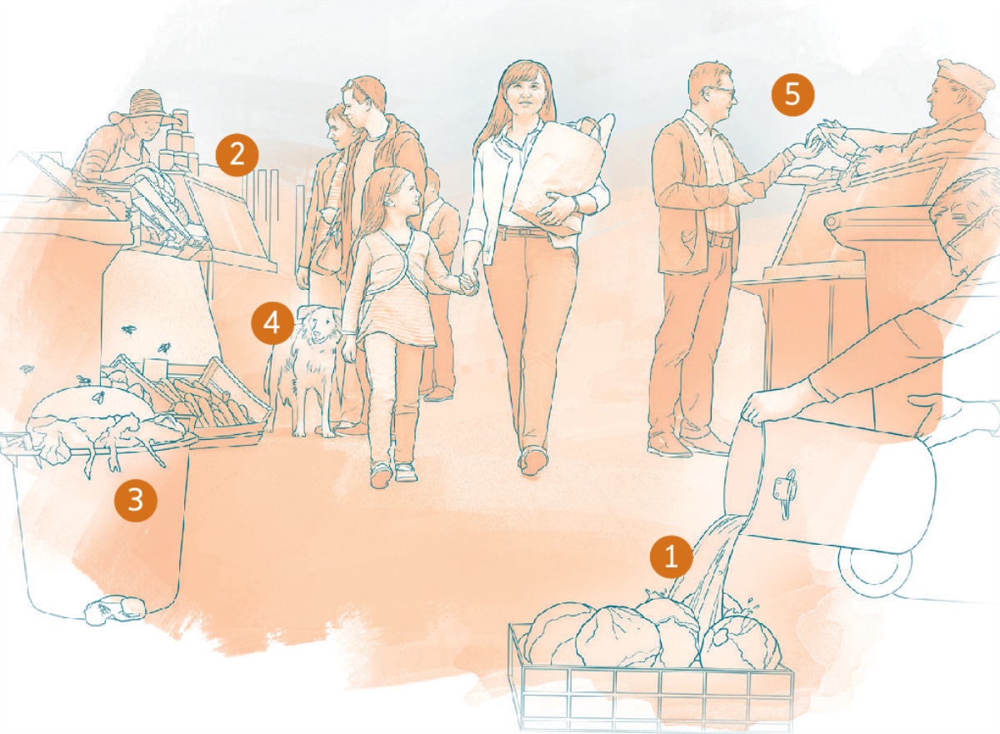

ТЕМА С ОБЛОЖКИ | ЗАБОЛЕВАНИЯ. КАК СНИЗИТЬ РИСК
Защитите себя от болезней

МНОГИЕ древние города были защищены массивными стенами.
Если неприятелю удавалось пробить даже
небольшую
брешь в
стене, под угрозой была безопасность всего города. Ваш
организм — это своего рода
окруженный
стеной
город. От того,
насколько вы заботитесь об укреплении защитных «стен» своего
организма, во многом
зависит
ваше здоровье. Рассмотрим пять
источников опасности и узнаем, как лучше всего защититься от
«неприятелей».
1 ВОДА
ОПАСНОСТЬ. Болезнетворные микробы могут прямиком попасть в
ваш организм через
зараженную
воду.
ЗАЩИТА. Лучшая защита — это уберечь воду от заражения. Если
вы знаете, что источник
воды в
вашей местности заражен или
может быть заражен, очищайте воду у себя дома *. Храните
питьевую
воду в
закрытых емкостях и наливайте ее либо чистым
ковшом, либо через краник. Никогда не опускайте руки в
емкость с
чистой водой. По возможности выбирайте для жительства такие
места, в которых должным
образом
заботятся об удалении
продуктов жизнедеятельности человека, чтобы они не попадали в
источники
воды.
2 ПИЩА
ОПАСНОСТЬ. Болезнетворные микроорганизмы могут находиться
как в продуктах питания, так
и на
их поверхности.
ЗАЩИТА. Зараженная пища может выглядеть свежей и
питательной. Поэтому возьмите себе за
правило тщательно мыть
все фрукты и овощи. Перед тем как готовить пищу или подавать ее,
убедитесь,
что
кухонные принадлежности, стол, разделочные
доски, а также ваши руки чистые. Некоторые продукты
питания
нужно готовить при определенной температуре, чтобы убить
опасных микробов. Не употребляйте продукты,
у
которых
изменился цвет, появился неприятный запах или вкус, ведь это
признаки того, что там вас
поджидает
целая армия вредных
микробов. Сразу же кладите в холодильник неиспользованные
продукты. Не
готовьте
для
других, если вы болеете .
3 НАСЕКОМЫЕ
ОПАСНОСТЬ. Некоторые насекомые являются переносчиками
опасных микроорганизмов
ЗАЩИТА. Чтобы уменьшить риск заражения от насекомых, не
выходите на улицу в то время,
когда
они наиболее активны, и
носите длинные брюки и одежду с длинными рукавами. Спите под
москитной
сеткой и
пользуйтесь средствами от насекомых.
Избавьтесь от емкостей и резервуаров со стоячей водой, где
могут
размножаться комары *.
4 ЖИВОТНЫЕ
ОПАСНОСТЬ. Микроорганизмы, которые живут внутри животных и
не причиняют им вреда, могут
представлять опасность для
человека. Если вас укусило или поцарапало домашнее или дикое
животное
или
вы
прикоснулись к его экскрементам, вы в зоне
риска.
ЗАЩИТА. Некоторые решили держать животных на улице, чтобы
свести к минимуму контакт с
ними.
Мойте руки после
прикосновения к домашнему животному и никогда не трогайте
диких животных. Если
вас
укусило или поцарапало какое-то
животное, тщательно промойте рану и обратитесь к врачу .
5 ЛЮДИ
ОПАСНОСТЬ.Некоторые микробы могут попасть в ваш организм
воздушно-капельным путем от
чихающего или кашляющего
человека. Также они могут передаваться через прямой кожный
контакт,
например
через рукопожатие или объятие. Микробы
могут «прятаться» на дверных ручках, перилах, телефонах,
пультах,
клавиатурах и экранах компьютеров
ЗАЩИТА. Не давайте другим ваши предметы личной гигиены,
например бритву, зубную щетку
или
полотенце. Избегайте
контакта с биологическими жидкостями животных или человека, в
том числе с
кровью
и
жидкостями с примесью крови. Нельзя
недооценивать пользу тщательного и частого мытья рук.
Считается,
что
это самый эффективный способ остановить
распространение инфекции.
Если вы болеете, по возможности оставайтесь дома. Согласно
рекомендациям Центров по контролю и
профилактике
заболеваний (США), лучше кашлять или чихать в салфетку или
рукав, но не в ладони.
1 ВОДА
ОПАСНОСТЬ. Болезнетворные микробы могут прямиком попасть в
ваш организм через
зараженную
воду.
ЗАЩИТА. Лучшая защита — это уберечь воду от заражения. Если
вы знаете, что источник
воды в
вашей местности заражен или
может быть заражен, очищайте воду у себя дома *. Храните
питьевую
воду в
закрытых емкостях и наливайте ее либо чистым
ковшом, либо через краник. Никогда не опускайте руки
в
емкость с
чистой водой. По возможности выбирайте для жительства такие
места, в которых должным
образом
заботятся об удалении
продуктов жизнедеятельности человека, чтобы они не попадали в
источники
воды.
2 ПИЩА
ОПАСНОСТЬ. Болезнетворные микроорганизмы могут находиться
как в продуктах питания,
так
и на
их поверхности.
ЗАЩИТА. Зараженная пища может выглядеть свежей и
питательной. Поэтому возьмите себе
за
правило тщательно мыть
все фрукты и овощи. Перед тем как готовить пищу или подавать ее,
убедитесь,
что
кухонные принадлежности, стол, разделочные
доски, а также ваши руки чистые. Некоторые продукты
питания
нужно готовить при определенной температуре, чтобы убить
опасных микробов. Не употребляйте
продукты,
у
которых
изменился цвет, появился неприятный запах или вкус, ведь это
признаки того, что там
вас
поджидает
целая армия вредных
микробов. Сразу же кладите в холодильник неиспользованные
продукты. Не
готовьте
для
других, если вы болеете .
3 НАСЕКОМЫЕ
ОПАСНОСТЬ. Некоторые насекомые являются переносчиками
опасных микроорганизмов
ЗАЩИТА. Чтобы уменьшить риск заражения от насекомых, не
выходите на улицу в то время,
когда
они наиболее активны, и
носите длинные брюки и одежду с длинными рукавами. Спите под
москитной
сеткой и
пользуйтесь средствами от насекомых.
Избавьтесь от емкостей и резервуаров со стоячей водой, где
могут
размножаться комары *.
4 ЖИВОТНЫЕ
ОПАСНОСТЬ. Микроорганизмы, которые живут внутри животных и
не причиняют им вреда,
могут
представлять опасность для
человека. Если вас укусило или поцарапало домашнее или дикое
животное
или
вы
прикоснулись к его экскрементам, вы в зоне
риска.
ЗАЩИТА. Некоторые решили держать животных на улице, чтобы
свести к минимуму контакт с
ними.
Мойте руки после
прикосновения к домашнему животному и никогда не трогайте
диких животных.
Если
вас
укусило или поцарапало какое-то
животное, тщательно промойте рану и обратитесь к врачу .
5 ЛЮДИ
ОПАСНОСТЬ.Некоторые микробы могут попасть в ваш организм
воздушно-капельным путем от
чихающего или кашляющего
человека. Также они могут передаваться через прямой кожный
контакт,
например
через рукопожатие или объятие. Микробы
могут «прятаться» на дверных ручках, перилах, телефонах,
пультах,
клавиатурах и экранах компьютеров
ЗАЩИТА. Не давайте другим ваши предметы личной гигиены,
например бритву, зубную щетку
или
полотенце. Избегайте
контакта с биологическими жидкостями животных или человека, в
том числе с
кровью
и
жидкостями с примесью крови. Нельзя
недооценивать пользу тщательного и частого мытья рук.
Считается,
что
это самый эффективный способ остановить
распространение инфекции.
Если вы болеете, по возможности оставайтесь дома. Согласно
рекомендациям Центров по контролю и
профилактике
заболеваний (США), лучше кашлять или чихать в салфетку или рукав,
но не в ладони.